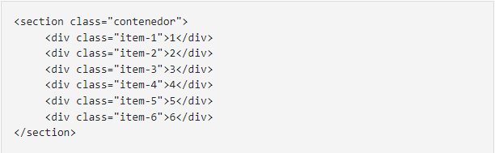

Proposito del Sitio
LLas etiquetas semánticas son algo muy importante en el desarrollo Web. Se clasifica en semántica cuando tiene que ver con el significado, es decir si nos informa sobre lo que se trata el contenido.
CSS Grid son unas rejilla (grid) que nos sirven para almacenar elementos, gracias a los estándares web, dando la opción de tener columnas de 12 o más, sin necesidad de usar otra herramienta, en otras palabras CSS Grid es tan solo un marco que nos permite organizar elementos basados en dos dimensiones, esto nos ayuda a crear paginas web con tablas en tan solo unos minutos, aplicando las reglas.
En las ventajas más relevante tenemos: la flexibilidad: te permite controlar los elementos en las 2 dimensiones y con total libertad, se reduce considerablemente el código empleado, lo que conlleva revisiones más sencillas y menor probabilidad de bugs. Por ser un código más simple y consistente se economiza tanto en tiempo como en recursos necesarios para mostrar la página y permite crear elementos dinámicos que se adaptan a diferentes tamaños o resoluciones sin complicaciones

Diseño con CSS
Según Schulz, R. G. (2008). Diseño con CSS, los elementos de CSS son
básicamente rectangulares. Cada elemento tiene un “Cuadro” propio.
stos cuadros se pueden reducir de tamaño y se pueden mover, “amontonar”
uno sobre otro e incluso, representarlos supuestos.
Referencias
Schulz, R. G. (2008). Diseño web con CSS. Marcombo.